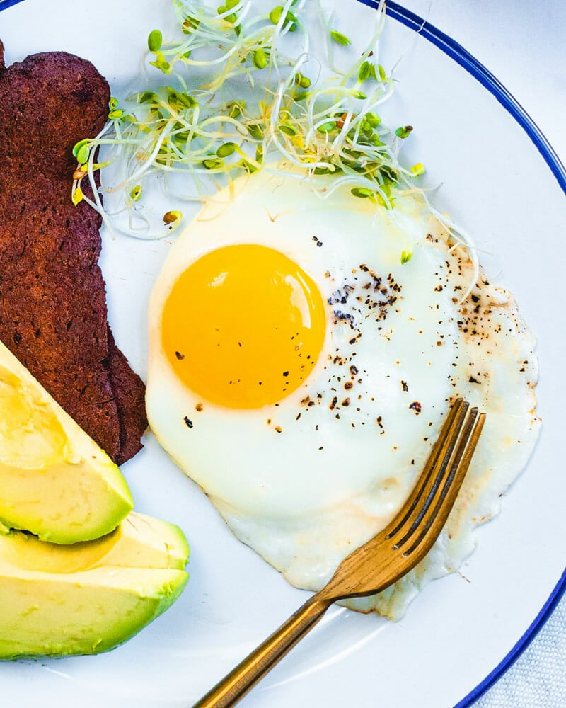
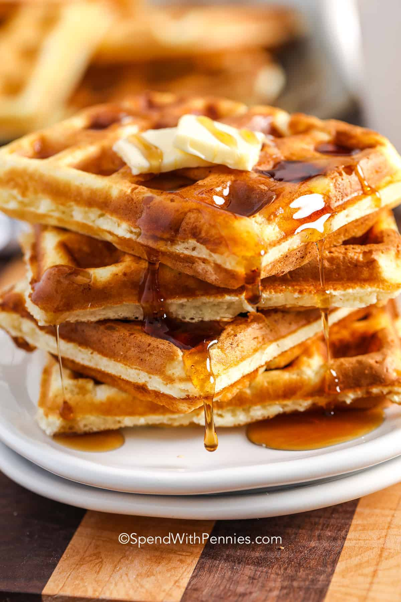
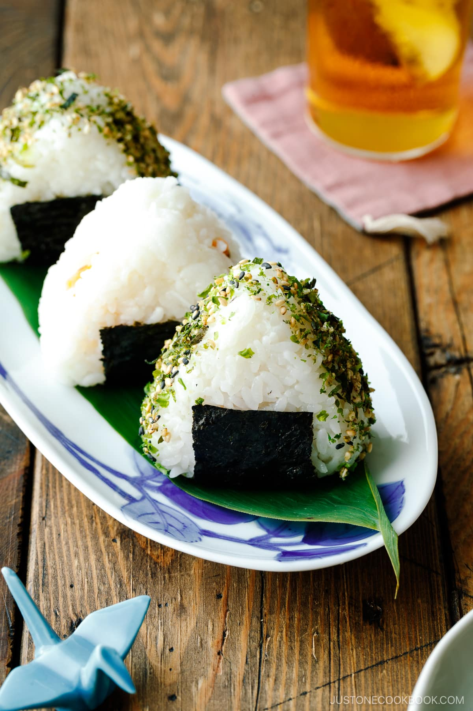
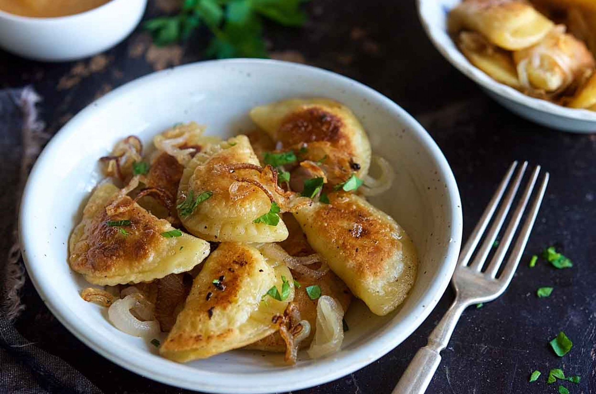
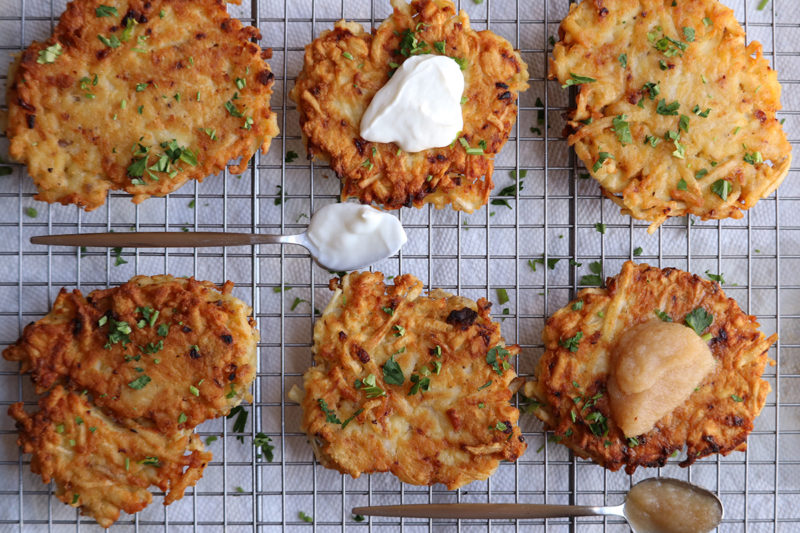
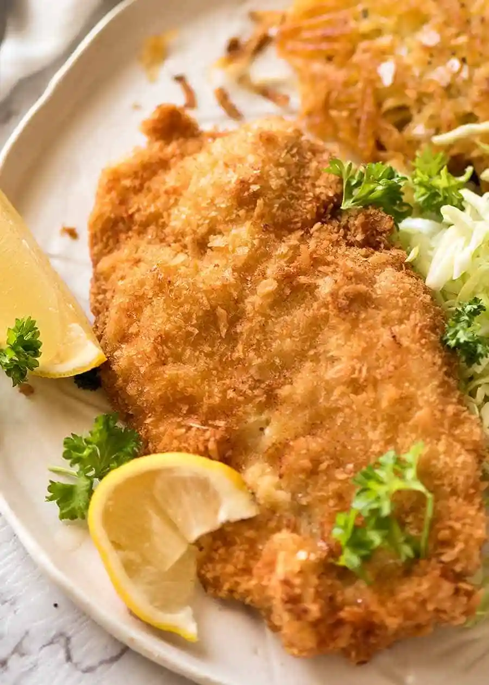
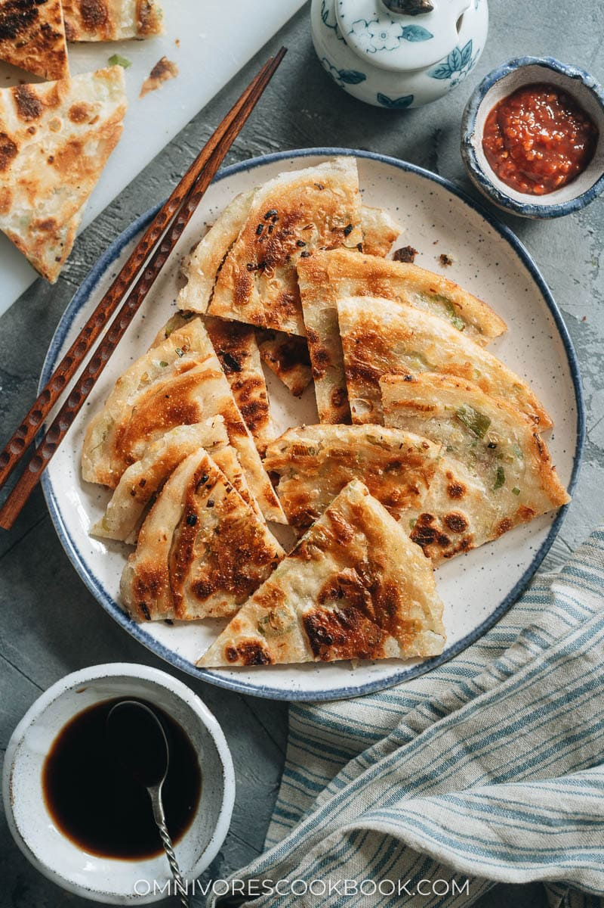
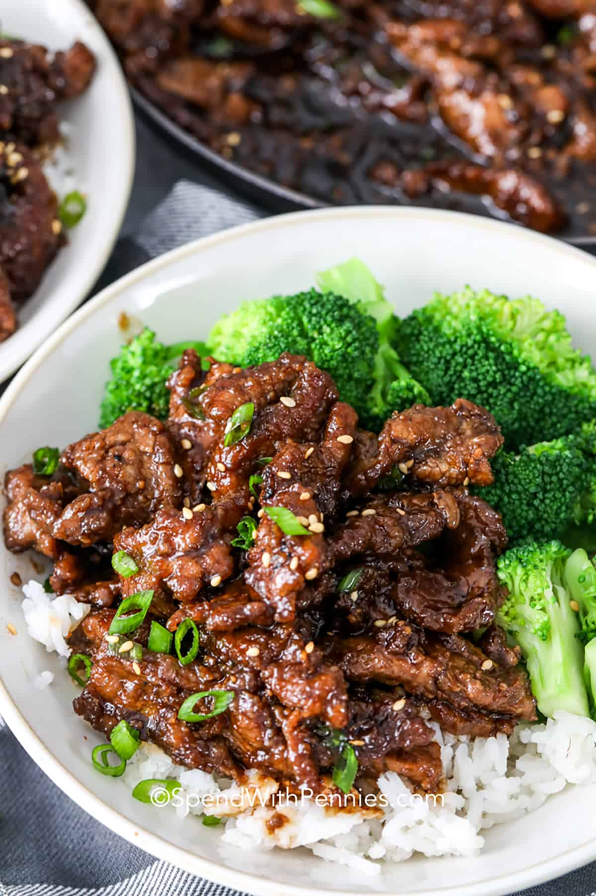
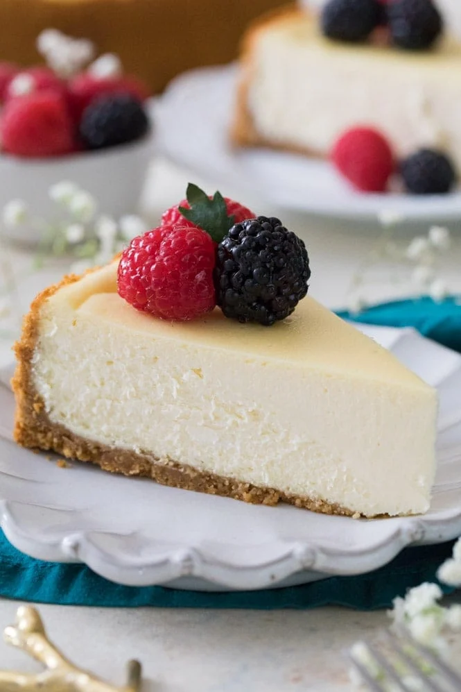
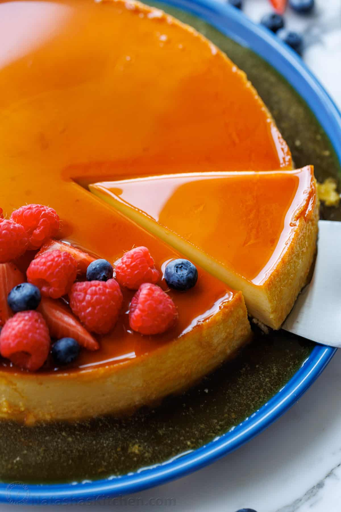

Tasty Food
And my unqualified opinions on them
That no one really asked for
This is a library that organizes a bunch of my favorite foods and organizes them
into breakfast, lunch, and dinner options (although this is just a general guidance and does not need to be strictly followed).
There are vague musing, recipes, or particular places which I think are the optimal ways to get the food.
Breakfast
Sunny Side Up Eggs
I actually did not like eating eggs for a long time in my life. It was probably because I was just used to overcooked scrambled eggs from my school cafeteria. Once I had sunny side up eggs, I fell in love with them. THey're especially good with some black and red pepper.
recipe

Waffles
Sometimes I hear people debate about whether pancakes are better or waffles are better. It's very obvious to me-- waffles win by a landslide. They're so much crispier, and have a built-in place for the syrup to go!
recipe

Chocolate Chip Banana Muffins
Muffins fit into a category of food that is just so much better when made from scratch and baked fresh. Banana muffins are the best kind of muffin in my opinion, and no banana muffin is complete without some chocolate chips and nuts!
recipe

Dutch Baby Apple Pancakes
I first ate this in Chicago with my grandparents. When you make them yourself it's always so much fun to see how much the pancakes puff up in the oven. They deflate very quickly though, so I've learned to have my phone on hand to take pictures right away!
recipe

Lunch
Mac and Cheese
I've had mac and cheese at a few different places during my life, and I still think that Wawa has some of the best mac and cheese I've ever had. The garlic aioli one is by far the best. You can also get a bowl with mac and cheese as the filling and get chicken tenders on top. It's a pretty good deal.
recipe

Deluxe Grilled Cheese Sandwhich
My friends wanted to go to Soup and Sandwhich for lunch once last year. I wasn't so enthusiastic because I'm not a huge soup or sandwhich fan. But I changed my mind after eating the deluxe grilled cheese sandwhich. It is deluxe. Only complaint is that it is a tad pricy. Adding egg to the sandwhich is amazing but another 2 dollars. Next time I go I might bring my own fried egg.
Soup and Sandwhich

Onigiri
They're so simple and yet so delicious. I've been getting a lot at Maruichi and Junbi, but if you want to get that optimal filling to rice ratio you're by far better off making them yourself.
recipe

Pierogies
I love pierogies so much. I made them from scratch the other day, and they're so much work, and they're not even that good. Sad. Just get the Mrs. T's brand Pierogies. The 4 cheese medley ones are really good. There's no way to improve upon them anyways, I'm not sure why I wanted to make them myself.
recipe

Dinner
Latkes
These are potato pancakes. My Dad makes them on Hanukkah and sometimes on other days too because they're so tasty. You need a lot of potatos and a lot of potato processing though, so be prepared. I like them best with applesauce or sour cream.
recipe

Schnitzel
This is basically tonkotsu but German. I'm still working on trying to get that perfect crispyness. I think using panko breadcrumbs helps.
recipe

Scallion Pancakes
Perfectly crispy, flaky, and delicious. They're surprisingly not that hard to make-- the dough is very simple and pretty forgiving and doesn't need to rise forever. It's a crowd favorite.
recipe

Mongolian Beef
I have a friend who is really good at making this. I don't really know how to make it though. I have a lot of experience eating it though.
recipe

Dessert
Lava Cake
There's not much that's better than chocolate cake. This one I will concede though. You'd think it would be complicated but as long as you take it out of the oven at the right time, the cakes turn out perfectly.
recipe

Cheesecake
Of course chocolate cheesecake is the queen of all cheesecakes, but they're all good. I'm not a huge fan of the graham cracker crust, which is common in the regular cheesecakes but you can generally escape with chocolate cheesecakes.
recipe

Ice Cream
I don't make my own ice cream. US Foods sells ice cream in the huge buckets that are at the dining halls. There's a bunch of flavors and the next one I want to try is the expresso mascarpone chocolate swirl flavor. On campus can't go wrong with Bent Spoon of course.
Bent Spoon

Flan
Flan is tasty. It's nice to make yourself because then you can go wild with the caramel-- I always want more.
recipe
